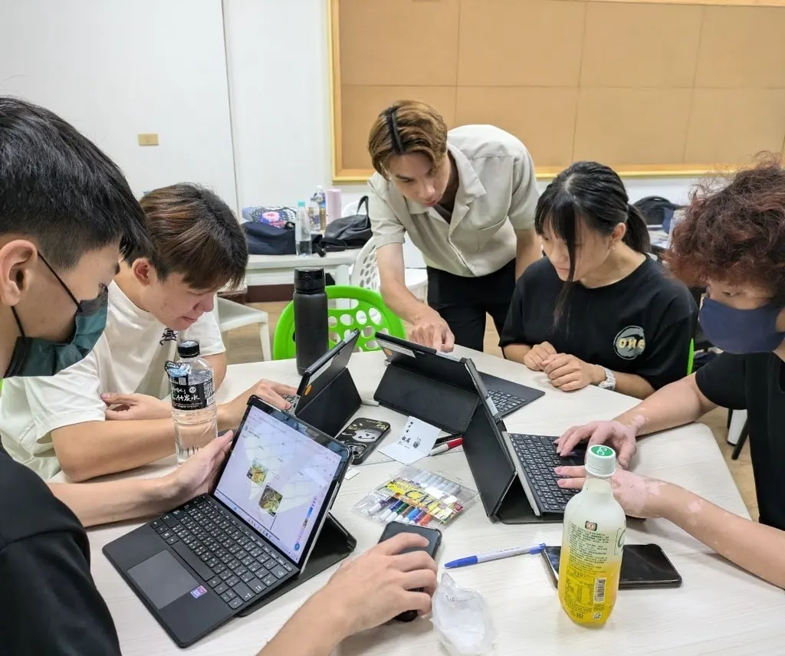
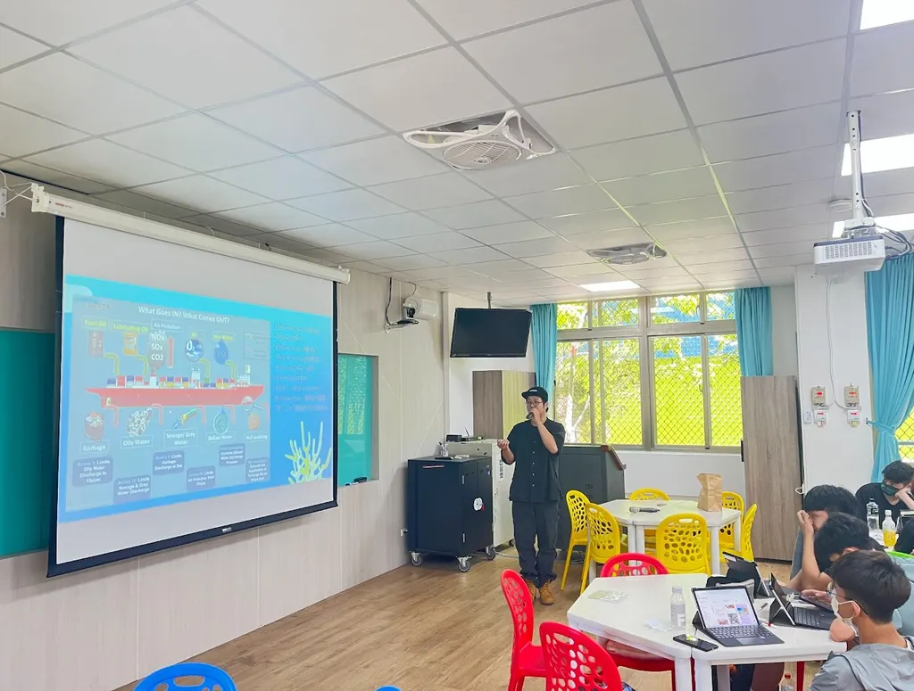
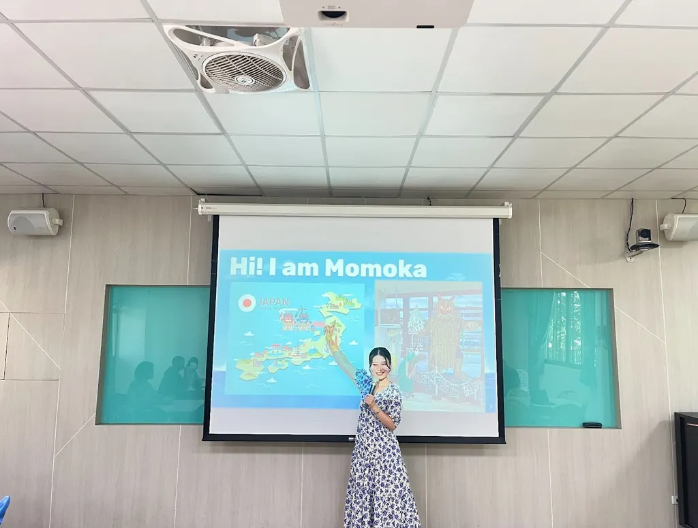

日本秋田與東港跨文化交流 & 海洋環境保育
授課教師：
賴𥐩妘、石井李佳、潘家軒、李岳璋
協同教師：
陳献為
任教年級：
高一
任教科目：
日本秋田與東港跨文化交流 / 海洋環境保育特色課程




一、日本秋田與東港跨文化交流
今天的課堂活動由來自日本秋田縣的ももか開始，她為大家介紹了秋田縣的特色，包括生剝鬼節、叉牙魚以及當地著名的水族館。這些介紹讓學生們對秋田縣的文化和自然景觀有了更深的了解。
隨後，𥐩妘向大家介紹了東港地區的特色。她提到了傳統的擲筊儀式、盛大的東港王船祭以及著名的黑鮪魚，讓來自日本的ももか和其他學生們了解了東港的獨特魅力。
在了解了秋田和東港的主要特色之後，東港高中的同學們開始思考，除了王船和黑鮪魚之外，東港還有哪些必須知道的特色。他們將這些特色彙整起來，並進行了詳細的介紹，讓ももか對東港有了更全面的認識。
從東港高中學生們的介紹中，我們了解到東港高中的悠久歷史，以及當地著名的美食如飯湯等。這次的交流活動不僅讓學生們增進了對彼此文化的了解，也促進了國際友誼和文化交流。
二、海洋環境保育特色課程
這堂課以台灣海岸的辨識作為序曲，學生們首先被要求判斷北海岸、東北角以及大鵬灣的位置。通過這個活動，讓東港高中的學生們反思自己熟悉的台灣海域是否曾遭受過污染。
接著，由家軒介紹國際上對船隻排放廢油的規範。他詳細解釋了船上哪些活動會產生廢棄物，並引導學生們思考如何防止這些廢棄物排放到海洋中，強調環境保護的重要性。
隨後，岳璋做了總結，他介紹了郵輪和乘客每天產生的污染量，並強調了海洋保育的重要性。岳璋還提出了跨領域合作的重要性，旨在告訴學生們跨領域的合作可以有效解決許多環境問題。
最後，學生們通過 Blooket 的遊戲來檢視今天所學習到的單字和跨領域知識。這次的課程不僅提升了學生們的環保意識，還培養了他們跨學科思考和合作解決問題的能力。